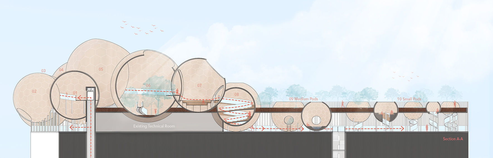

Urban Tranquillity: An Architectural Soundscape for High-Density Cities
Summary
My thesis proposes a sequence of spaces for tranquil experiences in high-density cities. There is a need for such restorative spaces because city dwellers have been found to have a greater likelihood of developing mood and anxiety disorders. With cities projected to grow and become even denser, this issue is paramount to address.While there are many architectural examples that provide calm spaces, they often do not address the noise pollution of the modern city. In modern urban living, where different types of sounds are layered and happening simultaneously, sounds of the city often overstimulate our senses and are perceived as noise. To enable mindfulness amid noise pollution, my thesis proposes a building that provides an experiential journey, offering a choreographed transition from spectrum of city sounds, one sound source at a time. My design is based on acoustic studies that determined the spaces’ sound-capturing capabilities.
My thesis is meant as a prototype that can be scaled and applied to other sites as well. The selected site is a neighbourhood in Singapore that I found to be in need of restorative spaces. My research publication can be accessed via here.
About Me
Yun Jie enjoys the process of designing meaningful spaces that are carefully crafted for its occupants. She believes that a good design is one that is guided by a strong design concept. Having graduated from Singapore University of Technology and Design with a Masters of Architecture, Yun Jie is keen to further hone her skills and continue learning about the process of planning, designing and construction.Apart from architecture, Yun Jie also has a passion for crafting and illustrations. She loves to see the smiles her little doodles can bring. Armed with her trusty sketchbook, she is always observing the world keenly and bringing mundane things to life on paper.
Name
Pang Yun Jie
Mentor
Thomas Schroepfer
Typology
Urban, Infrastructure
Site Location
Singapore

![]()
![]()
![]()
01 Introduction
Currently, we are living in a world where more than half of the population are living in urban areas. While living in the city brings many benefits, researchers found that city dwellers have a greater likelihood of developing anxiety and mood disorders. (Peen J, Schoevers RA, Beekman AT, Dekker J. 2010)This issue is made more pressing because according to the World Bank, it is estimated that number of people living in cities will increase by 1.5 times by 2045. As cities grow and become even denser, the detrimental effects of urban stress on our mental health must be addressed. Hence, it is urgent to prioritise the design of restorative spaces.
Due to this exponential growth of population in modern city, there are efforts that address this need for spaces to relax. The central park is a prime example of how a tranquil space is needed to balance stress of modern city with calm experience. Closer to home, the HDB recently launched a roadmap that will look into planning and designing HDB towns that focus on the health and wellbeing of its residents.
02 Initial Research
To introduce tranquil experiences in a high-density city, the research process began with looking into three main areas: (i) key guiding principles to design restorative spaces, (ii) design precedents and (iii) quantitative aspect of tranquillity.The first part of research sought to understand theories on the principles to design restorative spaces and the healing effects of greenery.
The second stage of research examined how tranquil spaces have been designed. This was to identify a common design language across time, different cultures and different typologies. From the study, I built a vocabulary of the design tools that were used. This set of design tools helped the development of my final design proposal.
Apart from the qualitative aspect of tranquillity, tranquillity has been quantified through the tranquillity rating equation (Pheasant et al., 2010 and Watts et al., 2011). The equation takes in the sound pressure level and percentage of natural features, showing the significance of these two factors.


03 Site Selection
The intent is to find a neighbourhood in Singapore that needs a place that brings relieve. My thesis aims to create a prototype that can be scaled and applied to other sites as well. To identify these spaces, I looked at quantitative measures that contribute to the tranquillity rating equation.On a macro scale, the noise map was used to identify the noisiest planning areas. To further narrow down site options, the residential population density map was used to identify the subzones with high population density. Thereafter, I looked at proximity of greenery to determine the specific site within the subzones.
Roof top of Block 201 in Serangoon Central was chosen. Roof top was chosen due to the access to an expansive view of the sky and to make use of an otherwise underutilized space.
04 Design Rationale
Design tools of earlier precedents are effective in creating a calm space but what they do not address is the noise pollution of modern cities.In modern urban living, where different types of sounds are layered and happening simultaneously, sounds of the city often overstimulate our senses and are perceived as noise. An overstimulation of our senses makes people feel tired, stressed, overwhelmed and irritable (Dieterle, 2018).
The solution is to curate sounds to allow the focus on different sound sources one at a time, enabling mindfulness amid noise pollution. This is much like the practice of focused meditation which helps to create order and slow down people’s inner dialogue.
To draw focus on specific sound, concave geometry was chosen because visually, it has minimal edges and the view is framed and focused on the sound source. Acoustically, they can be oriented to pick up specific sounds around the site while acting as a noise barrier to other sound sources. Qualitatively, it is an embracing form without sharp edges.
Taking inspiration from the Serpentine Pavilion (Peter Zumthor, 2011), my thesis proposes a building that provides an experiential journey, offering a choreographed transition from spectrum of city sounds, one sound source at a time. Different pods highlight different sound source within each. The journey goes from city sounds to the sounds of nature. Maneuvering from a collective setting to an individual solitary setting.
Taking inspiration from the Serpentine Pavilion (Peter Zumthor, 2011), my thesis proposes a building that provides an experiential journey, offering a choreographed transition from spectrum of city sounds, one sound source at a time. Different pods highlight different sound source within each. The journey goes from city sounds to the sounds of nature. Maneuvering from a collective setting to an individual solitary setting.


05 Acoustic Studies
The acoustic studies began with two research questions:(i) How well would each pod capture sound waves from a specific source? This study looked at factors such as loudness, flexibility, and directivity to determine the positioning of the pods and the positioning of the carved openings.
(ii) How well would each pod contain the sound within itself? The second study determined the design of the openings between the pods.
The acoustic studies were done using Evertims in Blender which allowed me to insert sound sources, set the surrounding material and listen to how it sounds within the space. Pods with circular openings and staggered doorways were found to be the most effective in capturing sound waves from a specific source and worked best in containing the sound within each pod.
06 Circulation
One can choose to exit the lift either at the first storey which brings you into the Base or the second storey which brings you directly into the first pod of the soundscape journey.

...
...
Inspired by the Serpentine Gallery Pavilion (Peter Zumthor, 2011), the base is designed to be a dark threshold where visitors will be drawn towards the light shining through the pods’ openings. The following are some visualizations of the interior of the base.


07 Construction
Taking inspiration from the BUGA Pavilion (ICD/ITKE University of Stuttgart, 2019), the pods can be made using flat hexagon wooden panels connected using finger joints. This method of construction enable easier fabrication and assembly. Perforated acoustic panels can be used at the inner most layer to fine tune the acoustic condition within the pods.The three different densities of louvers along the façade of the base expresses the same language of going from a collective space to one that is more private. Overtime, the greenery grows and form a homogeneous green base.